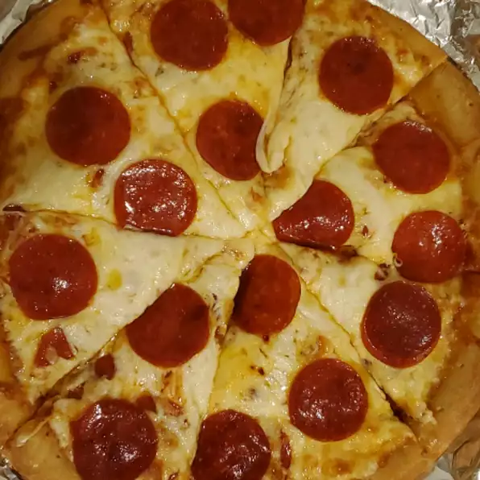

Pepperoni Pizza

Home made delicious pepperoni pizza
Pepperoni Pizza is the king of pizzas. Made with only four main ingredients, it is a sufficient and mind-blowing option for the average friday dinner.
It is a combination of grease, salt, absolute taste and spicy pepperoni, even thinking about it should make one's mouth water.
There are five valid ways/reasons to torture oneself with pepperoni pizza:
- Going to a restaurant, avoid paying for the ridiculously expensive wine by ordering a pizza
- Long day at the office, don't have the energy to cook -> order a pizza
- Frozen pizza... it's cheap!
- Feeling frisky, make yourself a pizza
- Being drunk, it's AMAZING
Preperation
- Assuming the obvious: you are not preparing it by yourself; Move to step 2.
- Taking as an axiom: you can't afford a restaurant; Move to step3
- Ask yourself, how much have you been drinking?
- In the most likely case, Order a pizza, it's waaaay better and at this state you don't care about money
- If caught sober, walk to the shop or just open the freezer and prepare it in the oven
- If you are disappointed by the recipe, want to make a pizza and are just about to click away, I strongly suggest returning to step1